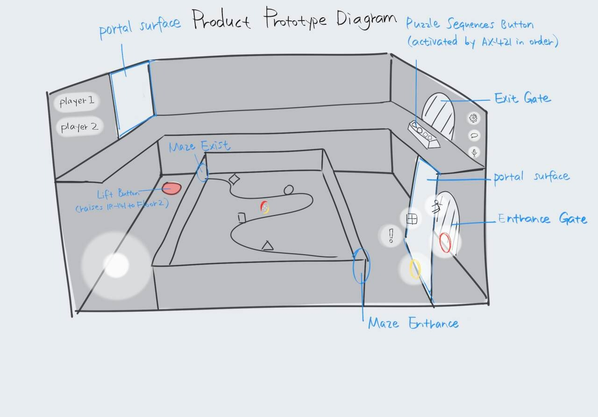
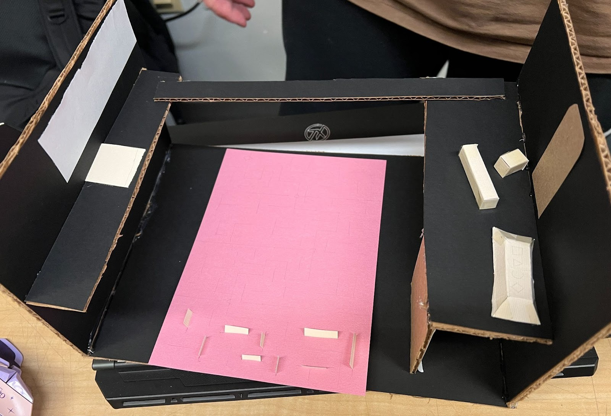

P O R T A L - 2

This project redesigned Portal 2's co-op mode into a story-driven, two-player experience that addresses the original game's lack of narrative and limited collaborative cognition. While Portal 2's single-player campaign delivers strong storytelling, the co-op mode contains minimal story development, creating a gap between modern player expectations for cooperative, story-driven gameplay and what the original provides.
The redesign applies cognitive frameworks—Smart-seeing, Projecting, and Close-coupling—to create a modern two-player experience that deepens cooperative cognition, enhances shared decision-making, and supports intuitive collaborative interaction. The solution introduces asymmetric character abilities: Player A (IR-141, a floating robot) can see hidden UV symbols but cannot press floor switches, while Player B (AX-421, a humanoid robot) can manipulate physical objects but lacks UV vision.
This information asymmetry transforms puzzle-solving into a distributed cognition system where players must communicate, synchronize actions, and combine perspectives to progress through both narrative and mechanical challenges. The redesign maintains Portal 2's core spatial reasoning mechanics while evolving them into a story-driven cooperative experience.
I served as the Lead Researcher, Documentation Writer, Level Designer, and Prototype Developer for this project. Beyond initial ideation (mind maps and sketches), I was responsible for all research, documentation, physical prototyping, and level structure design.
Research & Documentation: I conducted comprehensive research on cognitive frameworks (Smart-seeing, Projecting, Close-coupling) and their application to cooperative puzzle design. My research question focused on how cooperative puzzles can use Smart-seeing to help both players clearly understand each other's actions, shared goals, and available options without relying on verbal communication. I documented how visual cues, shared markers, and environmental signals enable intuitive collaboration by externalizing cognitive information into the environment.
I wrote the complete project documentation, synthesizing team research into a cohesive design framework. This included analyzing Portal 2's original mechanics, comparing it with modern puzell games and co-op games (The Witness, We Were Here Together, It Takes Two), and articulating how cognitive principles shape our redesign approach.
Level Structure & Flow Design: I designed the complete level architecture and interaction flow. The level structure follows a two-floor layout where players must split paths, gather asymmetric information, and synchronize actions to progress. I defined the 3-part core loop: Sense → Communicate → Sync Action—where players observe their environment, share information to build a shared mental model, and perform coordinated actions such as timing switches or aligning portals.
The interaction logic I designed creates interdependent progression: Player A navigates a maze on Floor 1, discovering UV symbols in sequence, while Player B remains on Floor 2 to activate mechanisms. Player A communicates the symbol sequence to Player B, who inputs it to unlock Player A's exit. Both players then synchronize on final pads to complete the level. This structure ensures that cooperation is mandatory, not optional.

Figure 01. Product Prototype Diagram - Level layout showing maze, gates, buttons, and player positionsPhysical Prototyping: I created handcrafted paper prototypes to validate puzzle flow and cooperative dynamics. These folded-paper models represented rooms, walls, platforms, and interactable objects, allowing us to manually simulate player movement, line-of-sight communication, and information distribution between two players. Through iterative testing with these physical prototypes, I refined spatial layout, identified communication bottlenecks, and ensured puzzle intentions were readable through environmental cues alone.

Figure 02. Physical Paper Prototype - Handcrafted cardboard and paper model for testing spatial layout and cooperative dynamicsThe prototyping process revealed critical design insights: how visual hierarchy guides attention, how asymmetric information creates natural communication needs, and how spatial separation enhances rather than hinders collaboration. These physical tests informed the final level design, ensuring that the digital implementation would support intuitive cooperative problem-solving.
This project demonstrated how research-driven design and physical prototyping can transform existing game mechanics into modern, cognitively sophisticated experiences. By grounding the redesign in established cognitive frameworks, I learned to justify design decisions with theory while ensuring practical playability through iterative prototyping.
The physical prototyping phase was particularly valuable—testing with folded-paper models revealed that spatial comprehension and communication patterns could be validated before digital implementation. This low-cost approach allowed rapid iteration on level structure, information distribution, and cooperative flow, catching design issues early and reducing development overhead.
Writing comprehensive documentation while designing the level structure taught me to bridge theory and practice—articulating how cognitive principles translate into concrete gameplay mechanics. The experience strengthened my ability to design systems where mechanics serve both functional gameplay and theoretical goals, creating experiences that are both engaging and intellectually grounded.